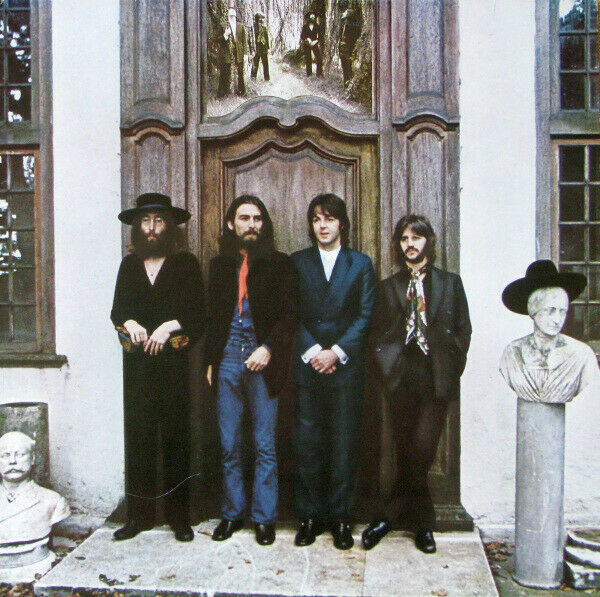

Lexicon of Song:
“Rain”
A song written by John Lennon and Paul McCartney in 1966
05 May 2003 · 7 min read
I don’t think “Rain” was just John’s. We sat down and wrote it together. It was John’s vocal and John’s feel on the song, but what gave it its character was collaboration.
— Paul McCartney (1)
This track is a profound example of how the lyrics of a song can be extended and amplified by the music. Let’s start with a little biographical context, as first Neil Aspinall, The Beatles’ roadie, and then John Lennon, primary author of “Rain,” recall The Beatles’ arrival in Australia.
When we arrived in Sydney it was pissing down with rain. We got off the plane and they put The Beatles on the back of a flat-back truck so the crowd could see them.
— Neil Aspinall (1)
We were having hysterics, laughing. It was so funny, coming to Australia and getting on a big van, all soaking wet; we thought it was going to be sunny. We only got wet for about fifteen minutes, but the kids got wet for hours. How could we be disappointed when they came out to see us and stood in all the rotten wind and rain to wave to us? They were great, really great. I’ve never seen rain as hard as that, except in Tahiti.
— John Lennon (1)
So you can appreciate the situational and attitudinal backgrounds from which John wrote the lyrics for the song.
If the rain comes, they run and hide their heads.
They might as well be dead.
If the rain comes.
If the rain comes.When the sun shines, they slip into the shade,
And sip their lemonade.
When the sun shines.
When the sun shines.Rain, I don’t mind.
Shine, the weather’s fine.I can show you that when it starts to rain,
Everything’s the same.
I can show you.
I can show you.Rain, I don’t mind.
Shine, the weather’s fine.Can you hear me, that when it rains and shines,
It’s just a state of mind?
Can you hear me?
Can you hear me?
At its most obvious level, this is a song, as John says in the Anthology, “about people moaning about the weather all the time (1).” And when the lyrics are taken alone, it is hard to make a case for the song being about much of anything else. At my count, the entire song is written using a vocabulary of only 44 words. So you could even make a case that the lyrics offer nothing more than a rough sketch.
Once we consider the words in the context of the music, though, they take on added weight. First, because their reading in the song is so slow, with many words stretched out into multiple beats and syllables, there is an added emphasis to the lyrics. The result is to put more weight on the words than their surface meaning will bear, thus suggesting to the listener that there is a hidden or additional meaning. The effect is almost revelatory, giving the impression that some important secret or prophecy is being disclosed.
The music also suggests in other ways that the weather is to be taken as a symbol of something else. The Beatles do this by making the music itself represent the condition they are describing. Paul says, in the Anthology: “On ‘Rain’ I remember we couldn’t get a backing track and we decided to play it fast and slow it down…. We had to play it fast and accurately… (1).” In other words, they played the backing guitar at a fast speed, recording this on tape, and then played the tape back at a slower speed. John also stumbled on the idea of recording a guitar and voices backwards. In other words, he sang and played guitar along with the backing track, while it was being played backwards, then reversed the direction of the voice and guitar and combined them with the backing track while being played forward. The effect is quite noticeable, since it reverses the normal attack and decay rates associated with a guitar. There is also Ringo’s stop and go drumming on the song, and Paul’s burbling bass, playing a repeated line that varies in tempo, and that runs quickly from the lower to the upper register and back again.
The effect of all these musical devices is to represent the “rain or shine” polarities in musical terms. So The Beatles are in effect saying, not only “Rain or shine, I don’t mind,” but also “fast or slow,” “backwards or forwards,” “stop or go,” “high or low.” As John sings in the song, “I can show you” — and he does, quite literally. And he is referring to more than just the words he is singing when he asks, “Can you hear me?” John’s voice is even altered further on these last two lines, using some other studio effects, giving the words a sort of hallucinogenic clarity.
So the implication is clearly that the vagaries of the weather are, at some deeper level, symbolic of something else. But of what? If we take the musical effects to be further symbols, then we are at a dead end, because there seem to be no further clues. We could make a case, I suppose, for all of this being symbolic of life itself, of some universal zen-like, yin/yang Eastern sort of mysticism. But this is a vague interpretation that doesn’t really add much to the song.
But what if the musical effects are not symbols, but are to some degree the subjects of the song themselves? In this case, perhaps, what we have is a song about the transformative and liberating effects of art. With this interpretation, The Beatles seem to be saying that it doesn’t make much difference what sorts of experiences you have: what makes a difference is what you do with those experiences. It is not who you are, where you come from, how much money you make that matter: it is whether you choose to live a life of creative expression, in which case all of the other details simply become grist for the artistic mill.
With this interpretation, the lines “I can show you,” and “Can you hear me” — both of which are given special emphasis by the music — take on added meaning. After all, it is the function of the artist to show his audience something, and not simply to tell them about it. And the artistic act is not complete until it is received, until it is “heard.”
It may help to remember that “Rain” was originally released as the B side of a single, with “Paperback Writer” on the A side. This context is significant, since “Paperback Writer” is a song that is literally about an artist (in this case, an author) trying to get published. So it makes sense that both sides of the single are about artistic expression.
I like to think of this song as a wonderful sort of summary of The Beatles’ lives, their most basic attitudes towards life, and of their art. When John, Paul and George first started making music together, they were three kids from Liverpool who couldn’t win a talent show. This didn’t deter them. They spent the better part of two years playing music in a sleazy part of Hamburg, making little money, living in squalor, surrounded by people who couldn’t speak their language. This didn’t faze them. They spent months trying to get a recording contract in England, and were turned down by every major record label. They kept playing music. They became the top act in the music business, on both sides of the Atlantic, with most people in the industry still considering them another flash in the pan that no one would remember in another three months. They kept writing and recording songs. Their life became one long tour, playing in front of crowds screaming so loudly that they couldn’t hear themselves play. They took this in stride. And so it goes.
So when John sings, “Rain, I don’t mind,” and “Shine, the weather’s fine,” there are years of experience compressed into those few words. When you look back at the career of The Beatles, and the amazing run they had, you have to wonder how they made it, how they stayed focused, how they avoided any of the pitfalls. The answer, for me, is in this song. Implicit in these lyrics is a wonderful sort of constancy, a remarkable and single-minded focus. No matter what the rest of the world thought of them, and no matter how crazy their situation became, they remained focused on what had originally brought them together: a love for this new kind of music, and a desire to create more of it.
-
The Beatles. The Beatles Anthology. Chronicle Books 2000. ↩